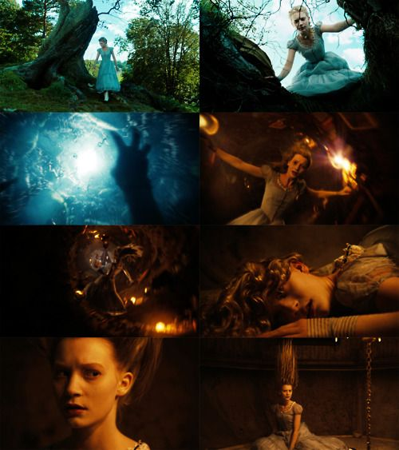
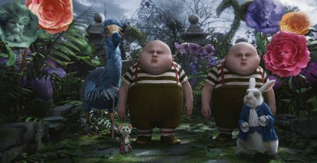
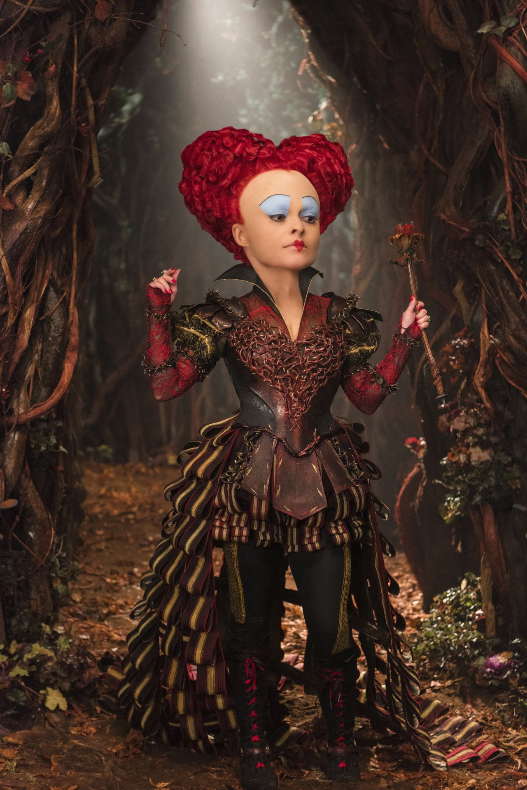
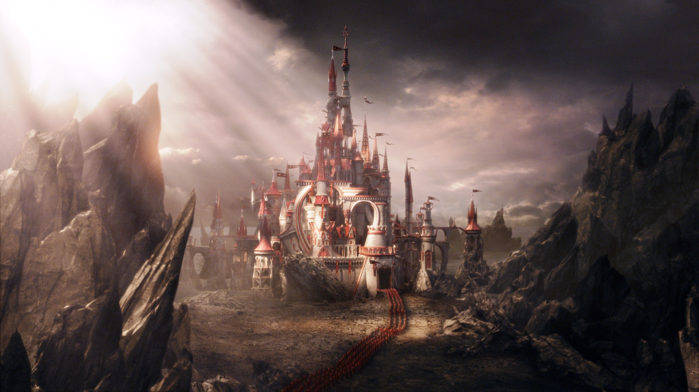
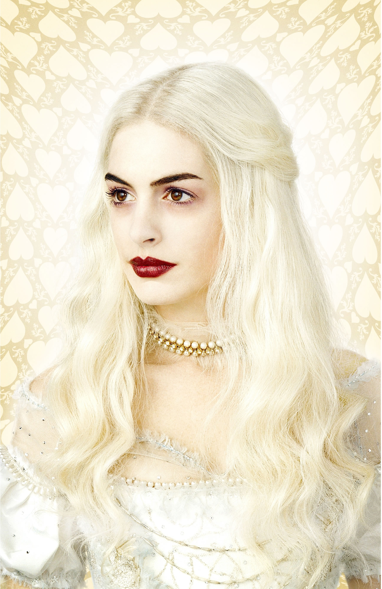
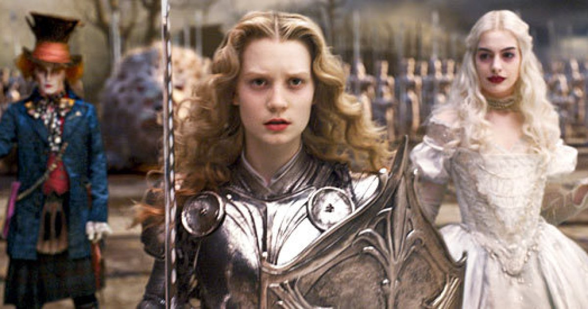

2.) Alice in Wonderland (Live-action 2010)
Ik vind
Het verhaal
- Alice
- Mad Hatter
- The White Rabbit
- The Red Queen
- The White Queen
Spring direct naar de personages:
Alice
- Volledige naam: Alice Kingsleigh
- Roepnaam: Alice
- Over: Hoofdpersoon uit de film. Alice is een nieuwschierige en fantasierijke jonge vrouw, die het moeilijk vind om de waarden van de samenleving waarin ze leeft te beseffen.

13 jaar na de dood van haar vader, bezoekt Alice
op negentien jarige leeftijd
samen met haar moeder een feestje. Op het feestje aangekomen, leert Alice
dat het eigenlijk een verlovingsfeest is van haar en Hamish, de man waar ze
aan is uitgehuwelijkt. Hamish is een slonzige man die ze eigenlijk helemaal
niet zo leuk vindt.

Wanneer Hamish zijn huwelijksaanzoek doet aan Alice, ziet Alice iets opmerkelijks.
Ze ziet een witte konijn in een blauw jasje en besluit de konijn te achtervolgen.
Tijdens het proberen te achtervolgen van de konijn, valt ze opeens in een konijnenhol,
vol objecten die in de lucht zweven, in een kamer vol met vele deuren. Ze vindt een
sleutel en probeert daarmee alle deuren in de kamer te openen. De sleutel past
in een klein deurtje, waar ze niet doorheen past.
Mad hatter
- Volledige naam: Tarrant Hightopp
- Roepnaam: Mad Hatter/The Hatter (NL: hoedenmaker)
- Eigenschappen: Wanneer hoedenmaker van streek raakt, veranderen zijn ogen van groen in goudgeel, ook kan hij soms erg gewelddadig worden.
- Over: Hoedenmaker in de film. Hij is vergiftigd door kwik, vandaar zijn oranje haar. Hij maakt deel uit van het verzet tegen de dicatuur van de Rode Koningin, koningin van het fictive land 'Underland'.

Door middel van het eten van een magisch stukje taart die haar laat groeien
en het drinken van een magisch drankje dat haar laat krimpen, komt ze door
het deurtje dat ze had geopend met het gevonden sleuteltje.

Alice kom terecht in een enorme tuin in
"Underland", waar ze de konijn
(White Rabbit)
die ze in het begin achtervolgde weer tegenkomt, samen
met the Dormouse, Tweedledee, and the Dodo. De groep neemt haar mee naar
Absolem the caterpillar, waar Alice te horen krijgt dat ze uiteindelijk
op "Frabjous-day" een gevaarlijke draak moet verslaan, Alice wil dit helemaal
niet, ze gelooft niet dat ze de draak kan doden. De groep waar Alice zich
had aangesloten, besluit dan om haar weer terug te brengen naar huis, maar
dan worden The white rabbit en The dodo opeens gevangen genomen door The
Bandersnatch en The Cards, in dienst van The Red Queen.
Alice wordt zelf niet gepakt.
De zwervende Alice wordt dan gevonden door een kat die haar begeleidt naar
The Mad Hatter
Ze arriveren precies tijdens een theekransje, maar dan komen de troepen
die The Red Queen had gestuurd om Alice te vinden erg dichtbij en verstopt Mad Hatter Alice
door haar te laten krimpen tot 15cm lang en haar in een theepot te stoppen. The Red Queen
vreest Alice, omdat ze de macht van The Red Queen kan verstoren en wil haar daarom
oppakken om haar te doden. Alice wordt tijdens het theekransje niet gevonden door de troepen
van The Red Queen en ze vertrekken weer.
Wanneer de troepen weg zijn, begint Alice zijn reis naar The White Queen
met Mad Hatter.
Mad Hatter vertelt dan over de slechte dictatuur van The Red Queen en over hoe zij
zijn soort heeft weggeruimd.
The Red Queen
- Over: Na het eerste bezoek van Alice (waar Alice zich niets van kan herrineren)

had The Red Queen haar zus The White Queen omvergeworpen en de controle over "Underland"
overgenomen.
De koningin heeft altijd een extreem slecht humeur en is erg streng tegenover haar volk. Ze is vaak de bron van problemen, vanwege haar egoistische houding. Als koningin verwacht ze meteen te krijgen wat ze wil.
Opweg naar The White Queen worden Alice and Mad Hatter opeens gevonden
door de troepen van The Red Queen, het lukt Alice te ontsnappen, maar Mad Hatter wordt helaas
opgepakt. Door de troepen wordt hij afgevoerd naar het kasteel van The Red Queen. Alice wilt hem
redden en besluit hen achterna te gaan naar het kasteel van de koningin. Ondanks de strenge
bewaking rondom het kasteel, lukt het Alice om de gracht vol met afgehakte hoofden over te
steken en komt in de tuin van The Red Queen terecht.
Wanneer Alice wordt gesnapt door de koningin doet ze alsof ze Um heet van Umbridge.
Dit gelooft de koningin en ze verwelkomt haar aan het hof.

Binnen het kasteel van The Red Queen, ontdekt ze het zwaard
waarmee ze de draak Jabberwocky mee moet verslaan, maar helaas is de zwaard streng
bewaakt. Ondertussen ontdekt de koningin dat Um eigenlijk Alice is en beveelt haar
troepen om Alice te onthoofden. Tegelijkertijd probeert Alice het zwaard te stelen
en te vluchten van het kasteel. Dit lukt haar.
The White Queen
- Over: The White Queen wordt in de film gezien als de "goede"  heerser. Als ze beweegt, doet ze dat gracieus, waardoor ze de illusie wekt dat ze voortdurend aan het dansen is. Samen met Alice en de verzetsgroep proberen ze de dictatuur van haar zus te vernietigen.

Alice hervat haar reis naar het kasteel van de goeie White Queen.
Wanneer ze bij het kasteel aankomt, leert Alice dat ze al eerder in "Underland" is
geweest toen ze nog zes was.
Opeens wordt Alice overspoeld door herrineringen van haar
eerdere bezoek en realiseert ze dat het werkelijk haar lot is om de Jabberwocky te doden.
De legers van The Red Queen en The White Queen ontmoeten elkaar op het slagveld voor een
laatste strijd en de Jabberwocky wordt vrijgelaten. Dit is het punt waar Alice het beest moet
doden om het koninkrijk te redden van vernietiging door The Red Queen.
Alice wint van de draak door zijn kop eraf te snijden en tegelijkertijd heeft
The Red Queen nu ook verloren. The White Queen verbant haar zus dan uit het koninkrijk
en krijgt weer de macht over het land. Als allerlaatste geeft The White Queen Alice
een beetje bloed van de Jabberwocky die ze moet opdrinken om Underland te verlaten
en weer terug te keren naar haar normale leven in Engeland.
Terug in Engeland wijst ze het huwelijksaanzoek van Hamish af en besluit ze om
op handelsreis te gaan.
THE END